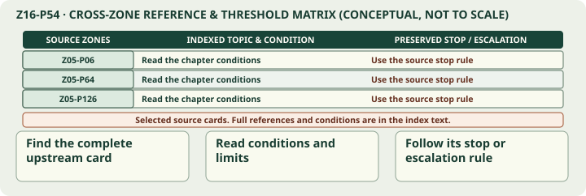

Z16-P54 · Field reference atlas · New manuscript
Wild Berries and Lethal Moonseed, Buckthorn, Baneberry Index
Cross-reference Z05 berry profiles (`Z05-P57`–`P72`) with lethal Canada moonseed, common buckthorn, baneberry, nightshade, and pokeweed.
When it applies · Summer and autumn wild-fruit observation and pediatric hazard prevention.
Equipment · Full offline reader (Z05), primary zone cards, and local emergency and agency references.

Actions
- Enforce the universal Z05 fruit rule: berry color NEVER predicts safety (Z05-P06, Z05-P72)—white, red, blue, and black fruits all contain severely toxic Minnesota species.[A05, B10, B15]
- Check parent foliage AND seed anatomy on every dark or red fruit: forked tendrils + pear seeds (wild grape) vs zero tendrils + lethal crescent seed (Canada moonseed, Z05-P64, Z05-P127); alternate spineless vs sub-opposite twig-spine purging common buckthorn (Z05-P58, Z05-P126); aggregate bramble drupelets vs smooth single toxic berries (Z05-P60).[A05, B10, B15, B20]
- Exclude cardiogenic white, red baneberry (Actaea, Z05-P128), lethal yew red arils (Z05-P129), podophyllotoxin mayapple (Z05-P71), raw cyanogenic elderberry stems, seeds (Z05-P59), nightshades (Z05-P124), and pokeweed (Z05-P125) under permanent WITHHELD_HOLD.[A05, B10, B21, B24]
Failure recognition · Allowing children to sample smooth dark or bright red trailside berries without verified parent foliage and seed cuts risks rapid fatal poisoning.[B10, B15]
Verify · Seed-shape, tendril, spine diagnostics, color-myth rejection, and pediatric Poison Help referral stay intact.[B09, B10, B15]
Stop or change course · Stop immediately if parent leaves are absent, a single crescent seed appears, or a child mouths any wild berry (call 1-800-222-1222).[B09, B10]
Evidence and editorial notes
- A05 · Bell Museum (UMN) · Minnesota Biodiversity Atlas (Current web edition)
- Section: Botanical and fungal cross-reference with permanent consumption HOLD · Conditions: Indexing Z05 species morphology, lookalikes, and Poison Control referrals
Support: Atlas botanical/fungal tables index accepted names, phenology, and lethal lookalikes solely for observation, hazard avoidance, and voucher documentation.
Limitations: No Z16 index entry may imply edibility or bypass Z05 multi-character and expert-review gates. · Conflicting evidence: None noted.
Editorial note: Preserves Z05 consumption HOLD inside Z16. · Specialist reviewer: Botanist and mycologist
Primary source · checked 2026-11-25 - B09 · Minnesota Poison Control System · Poison Help 1-800-222-1222 and Regional Plant/Mushroom Guidance (Current web edition)
- Section: Minnesota Poison Control 1-800-222-1222 immediate referral · Conditions: Any suspected toxic plant, berry, root, or mushroom ingestion or severe dermal exposure
Support: Call 1-800-222-1222 immediately (or 911 for breathing difficulty, collapse, seizures, or altered alertness); do not wait for delayed symptoms.
Limitations: Never induce vomiting or administer home remedies unless explicitly instructed by Poison Control or EMS. · Conflicting evidence: None noted.
Editorial note: Mandatory Z05 poison-response escalation. · Specialist reviewer: Clinical toxicologist / Poison Center
Primary source · checked 2026-11-25 - B10 · National Capital Poison Center · Poisonous Plants and Berries Overview (Current web edition)
- Section: Poisonous plants, berries, and dose-dependent pediatric risk · Conditions: Household, trailside, and wild berries, seeds, and foliage
Support: Many attractive wild berries, seeds, and roots contain cardiac glycosides, alkaloids, or oxalates that cause rapid toxicity, especially in children.
Limitations: Never sample unknown plants; recognition and consumption suitability remain separate decisions. · Conflicting evidence: None noted.
Editorial note: Separates recognition from consumption. · Specialist reviewer: Clinical toxicologist and botanist
Primary source · checked 2026-11-25 - B15 · University of Minnesota Extension · Common Buckthorn Identification and Toxic Fruit (Current web edition)
- Section: Common buckthorn (Rhamnus cathartica) dark berry lookalike · Conditions: Minnesota woodlands, edges, and thickets
Support: Common buckthorn bears clusters of dark purplish-black berries with sub-opposite leaves and terminal twig spines; fruit causes severe gastrointestinal purging.
Limitations: Frequently confused with chokecherry, serviceberry, or elderberry by casual observers; verify leaf arrangement, thorns, and seed count. · Conflicting evidence: None noted.
Editorial note: Key Minnesota dark-berry toxic lookalike. · Specialist reviewer: UMN Extension botanist
Primary source · checked 2026-11-25 - B20 · USDA Forest Service · Celebrating Wildflowers: Plant Identification and Conservation (Current web edition)
- Section: Botanical morphology terminology and multi-character keys · Conditions: Observing leaf venation, margins, flower symmetry, and fruit anatomy
Support: Accurate plant identification requires confirming multiple independent morphological characters at the observed life stage.
Limitations: Missing flowers, fruit, or underground parts require stopping identification rather than guessing. · Conflicting evidence: None noted.
Editorial note: Enforces multi-feature identification standard. · Specialist reviewer: Plant taxonomist
Primary source · checked 2026-11-25 - B21 · USDA Forest Service · Ethnobotany, Wild Foods, and Conservation Precautions (Current web edition)
- Section: Ethnobotanical limits, preparation hazards, and permit rules · Conditions: Wild plant/fungus gathering ethics and toxicity processing limits
Support: Some traditionally used plants contain raw toxins (cyanogenic glycosides, oxalates, tannins, alkaloids) that require verified preparation or remain unsafe for sensitive groups.
Limitations: Historical ethnobotanical mentions are never modern clinical safety clearances; maintain consumption status WITHHELD until qualified review. · Conflicting evidence: None noted.
Editorial note: Enforces recognition-vs-consumption separation. · Specialist reviewer: Ethnobotanist and food toxicologist
Primary source · checked 2026-11-25 - B24 · CDC MMWR · Notes from the Field: Severe Mushroom Poisoning — Minnesota 2018 (MMWR 68(21))
- Section: Rejection of folklore edibility tests and AI-only visual clearance · Conditions: All wild plant, berry, root, and fungal screening
Support: Universal skin/lip rub tests, silver-spoon tests, animal-browsing observations, single photos, and generated illustrations never establish edibility.
Limitations: If any diagnostic feature, site-contamination history, or expert review is missing, consumption remains strictly WITHHELD. · Conflicting evidence: None noted.
Editorial note: Enforces Z05 fail-closed edibility rule. · Specialist reviewer: Botanist, mycologist, and clinical toxicologist
Primary source · checked 2026-11-25
Source lineage · New manuscript (Z16 P20 botanical index) · Classification · New manuscript.